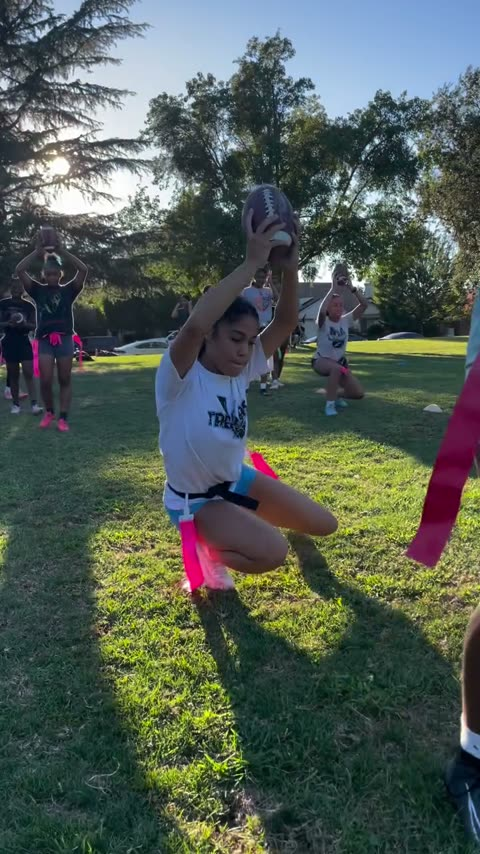
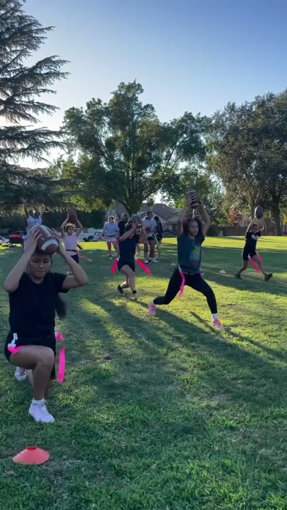
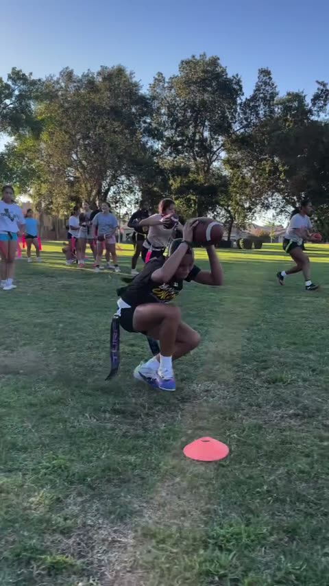
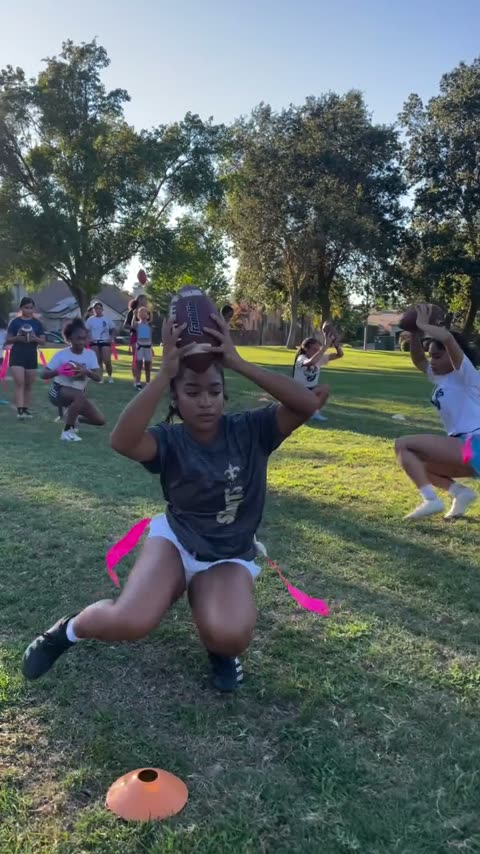
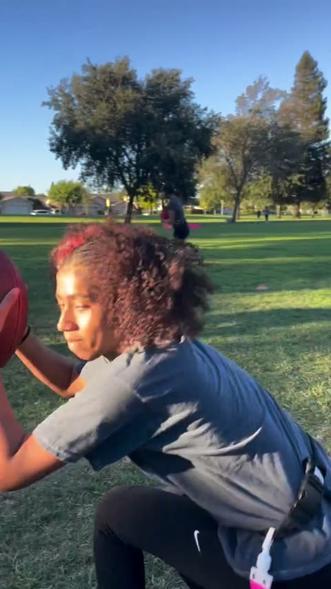
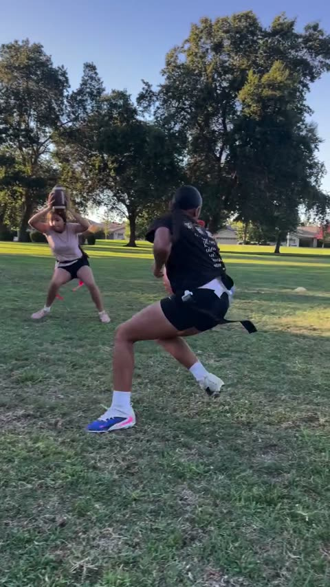

0:00Échauffement15 min
0:15Circuit technique65 min
1:20Match20 min
1:40Renforcement20 min
0:00 → 0:15
Échauffement — 4 exercices + 1 variante
15 min

01Mobilité basse, ballon haut3–6
Position haute → descente → genou près du sol → transfert
- Bassin très bas, genou près du sol.
- Ballon tenu haut du début à la fin.
- Lent et propre, pas encore de vitesse.

01BVariante sans ballon6–8
Arrivée → grosse descente → point bas → poussée
- Mains derrière la tête, ballon retiré.
- Descendre plus bas que confortable.
- Pousser pour ressortir, jamais s'arrêter en bas.

02Dip/cut, ballon sécurisé8–11
Arrivée avec ballon → descente → appui latéral → sortie
- Ballon plaqué contre le corps.
- Hanches basses au plot, appui planté.
- Sortir en réaccélérant.

03Dip en mouvement, ballon haut11–13
Arrivée lancée → ballon haut → dip → transfert → sortie
- On arrive déjà lancé, pas de départ arrêté.
- Le ballon reste haut pendant la descente.
- Il redescend au corps seulement à la sortie.

04Feinte corps + ballon13–15
Arrivée → descente → feinte → réorientation → accélération
- Vendre la feinte avec le buste ET le ballon.
- Rester bas pendant la feinte.
- Sortir dans l'autre sens, ballon sécurisé.
0–3 min : mobilité générale et activation, sans ballon. Le groupe exécute, il ne regarde pas.
0:15 → 1:20
Circuit technique — 2 QB fixes, 2 circuits identiques
65 min
circuit AQB1 fixe · 2 binômes
- Zone QB — 1 receveur + 1 rusher. Mini-set de 3 passes : slant → out → go.
- Zone Flag pull — 1 attaquant + 1 défenseur. Reps en continu : ≈ 4 par mini-set, ≈ 2 dans chaque rôle.
- Sas appuis — un par un : joueur 1 traverse, joueur 2 traverse. Pas de file, pas d'attente.
- Retour zone QB.
circuit BQB2 fixe · 2 binômes
- Zone QB — 1 receveur + 1 rusher. Mini-set de 3 passes : slant → out → go.
- Zone Flag pull — 1 attaquant + 1 défenseur. Reps en continu : ≈ 4 par mini-set, ≈ 2 dans chaque rôle.
- Sas appuis — un par un : joueur 1 traverse, joueur 2 traverse. Pas de file, pas d'attente.
- Retour zone QB.
Quand on tourne ? Zone QB : slant + out + go terminés → rotation immédiate.
Pendant ce temps, zone Flag pull enchaîne sans pause ; au signal, on termine la répétition en cours.
Les deux binômes échangent de zone. À chaque retour en zone QB, receveur et rusher inversent leurs rôles.
terrain
Matériel & répartition
Joueurs
- ≈ 10 joueurs : 2 circuits de 5.
- Par circuit : 1 QB fixe + 2 binômes de 2.
- Binôme 1 part en zone QB, binôme 2 en zone Flag pull.
Matériel
- 2 ballons minimum par QB (le drill de la vidéo en utilise 3).
- 5 à 6 plots, dont 1 pour le sas.
- 1 jeu de fanions complet + sifflet.
À ne pas oublier
- Le sas est un passage : pas de file, pas d'attente.
- Les QB ne bougent jamais de poste.
- Sur le renfo, on coupe un tour en deux plutôt que de mal exécuter.
repères
Les zones — l'essentiel à dire

1Zone QB — 3 tracés13 s
Slant → out → go, même receveur
- Ballon attrapable, quel que soit le tracé.
- Slant rapide et dosé · out : timing · go : devant lui.
- Les deux binômes passent aux 3 tracés.

2Zone Flag pull5 s
Réaction → angle → approche basse → main au flag
- Ne pas partir trop tôt : on réagit.
- Rester bas, fermer avec les pieds.
- La main arrive en dernier, sur le fanion.

3Sas appuis6 s
Entrée → abaissement → appuis courts → sortie
- Deux ou trois appuis suffisent : c'est un passage.
- Rester bas, ne pas se redresser.
- Un par un, personne n'attend.

4Adaptation Iguanesajout
Ajouter un rusher en zone QB
- La vidéo ne montre aucun rusher : c'est notre ajout.
- Pression sur les 3 tracés du mini-set.
- Le QB reste fixe, le rusher ne touche pas le ballon.
1:20 → 2:00
Match puis renforcement
Match — 2 × 10 min
- Changement immédiat à la fin de la 1re mi-temps.
- On limite les interruptions au maximum.
- Tu ne regardes que trois choses : QB précision sous rush ·
receveurs catch + accélération · défense angle + flag pull.
- Squats 100
- Pompes 50
- Abdos 100
4 tours conseillés
- Squats 25 · Pompes 12 / 13 / 12 / 13 · Abdos 25.
- Après 1 h 40 de séance, on garde la qualité.
Gainage collectif — tout le monde est en gainage en même temps : chaque joueur compte
10 secondes à voix haute, à tour de rôle. 10 joueurs = 1 min 40 de gainage continu,
personne n'attend.
à remplir
Notes de séance